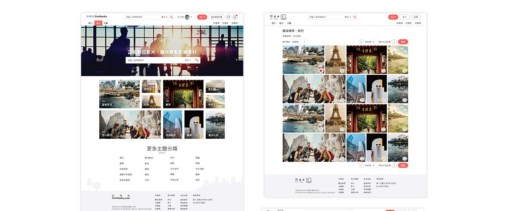
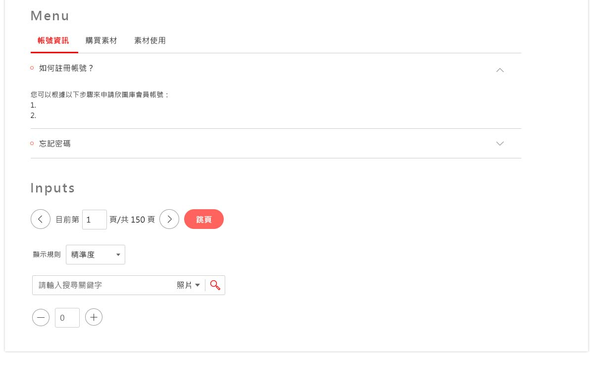
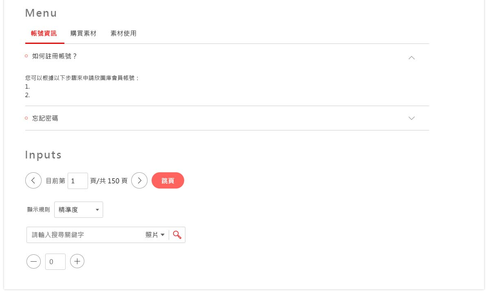

UI/UX設計
UI/UX Design
圖庫網


規範
- 頁面最大寬度，(首頁)1280px，(內容)990px
- 參照UI kit延伸使用所有已完成頁面的內容及元素、字型、字級、顏色
- 元素的寬高須完全一樣，例如：照片尺寸、button、menu、input
- 物件、標題層級要確定好，才好統一規格字級、顏色
- 物件須符合在參考線內，以利於之後切版
- PSD檔名命名規則：頁面編號+頁面名稱，例如：1.1_照片搜尋結果頁
- 例外：如有發現一些之前沒有的畫面或元素、內容，先提出討論後，真的無法解決，才出新的樣式
 
